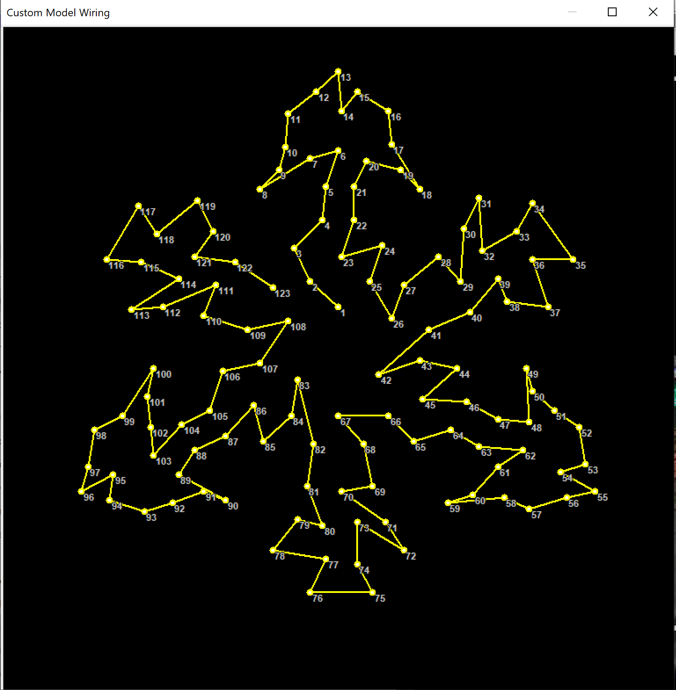
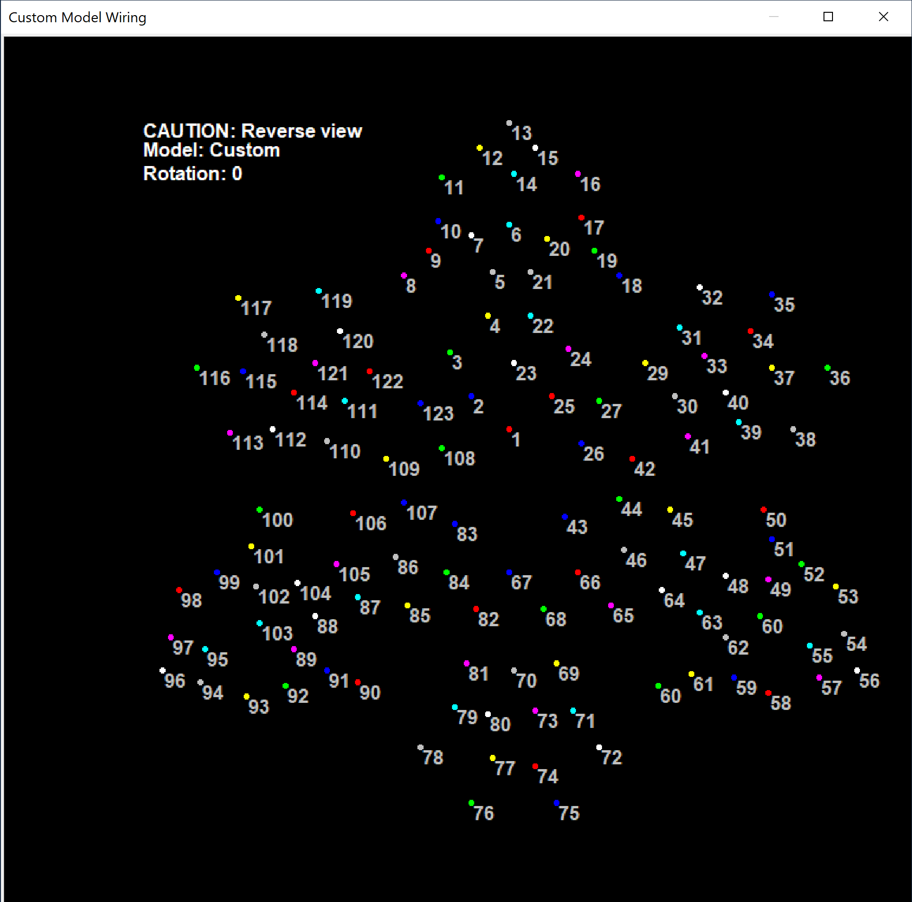

Most of the time when you get a coro prop from the vendor, download the model, and look at the wiring view, you get something that helps you wire it properly...
...but if you choose an unpopular prop sometimes you get a surprise!
Depending on your inclination, you can bug the vendor, or you can fix this in the "Model Data" popup. (If you look closely this one has no number 28, and 60 is used twice, which greatly confuses the spider that makes the diagram.)